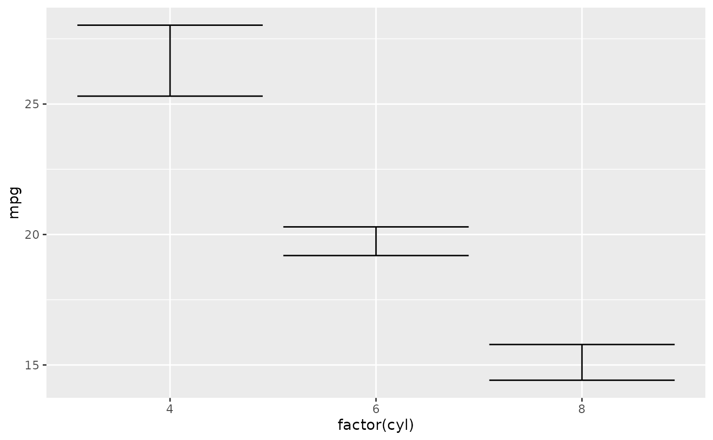
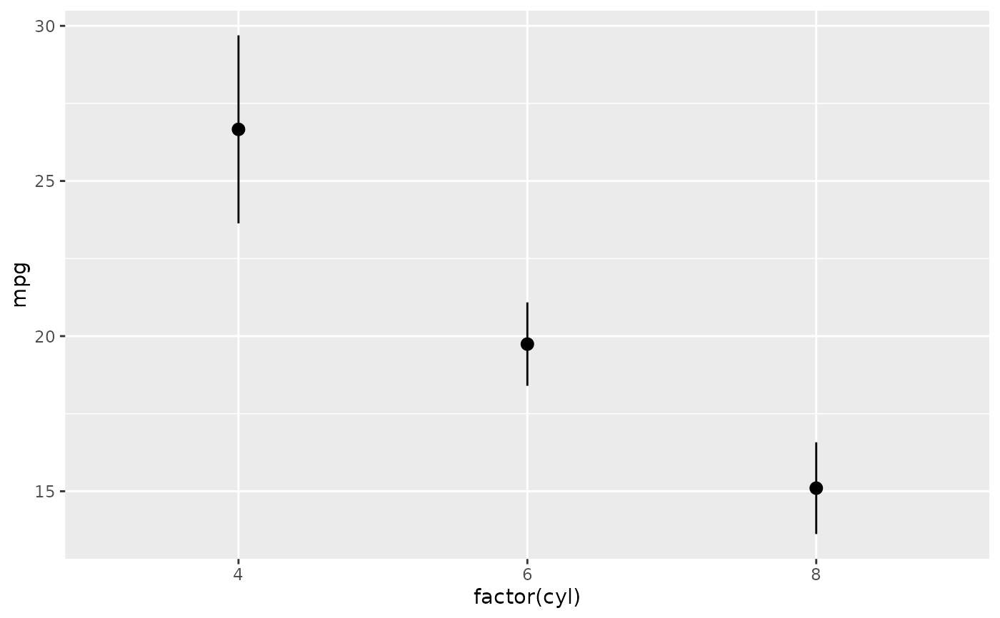
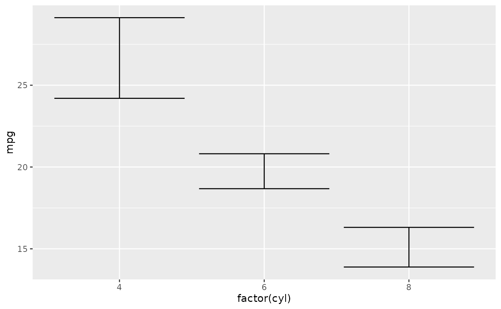

stat_error() computes the error bounds from raw observation-level data
using ggplot2's fun.data contract. Where geom_error() expects pre-
computed error columns, stat_error() summarises y (or x, when
orientation is horizontal) within each group via the function supplied to
fun.
Usage
stat_error(
mapping = NULL,
data = NULL,
geom = NULL,
position = "identity",
...,
fun = "mean_se",
fun.args = list(),
error_geom = "errorbar",
orientation = NA,
na.rm = FALSE,
conf.int = 0.95,
show.legend = NA,
inherit.aes = TRUE
)Arguments
- mapping, data, position, show.legend, inherit.aes
Standard ggplot2 layer arguments.
- geom
The geom to render the summary with. Defaults to GeomErrorStat, which reuses
geom_error()'s draw path.- ...
Additional parameters. Names that match
fun's formals (or any name, whenfunaccepts...) are forwarded tofun; the remainder go togeom_error()as per-side styling (colour_neg,width_pos, …) or standard aesthetics.- fun
One of
"mean_se"(default, usesggplot2::mean_se()),"mean_ci"(mean with 95% normal-theory CI viastats::qt(); no Hmisc dependency), or a function taking a numeric vector and returning a single-row data.frame with columnsy,ymin,ymax.- fun.args
Named list of extra arguments to pass to
fun. Merged with any...arguments whose names matchfun's formals;fun.argswins on collision.- error_geom
One of
"errorbar"(default),"linerange","crossbar","pointrange".- orientation
NA(default, inferred),"x", or"y".- na.rm
If
TRUE, dropNAvalues from the summarised axis before applyingfun.- conf.int
Confidence level forwarded to
funwhen the function accepts aconf.intargument (e.g.fun = "mean_ci"or a customfun.datawith that formal). Ignored for funs that don't declare it, so it's safe to leave at the default when usingfun = "mean_se".
Examples
library(ggplot2)
ggplot(mtcars, aes(factor(cyl), mpg)) + stat_error()
#> `stat_error()` using fun = "mean_se".

ggplot(mtcars, aes(factor(cyl), mpg)) +
stat_error(fun = "mean_ci", error_geom = "pointrange")
#> `stat_error()` using fun = "mean_ci" and conf.int = 0.95.

# 90% CI with NA-tolerant summarising:
ggplot(mtcars, aes(factor(cyl), mpg)) +
stat_error(fun = "mean_ci", conf.int = 0.9, na.rm = TRUE)
